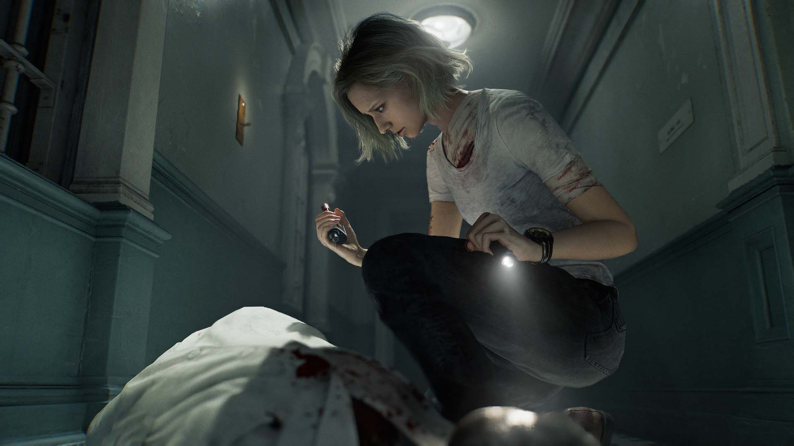

Resident Evil Requiem: dos juegos en uno, y los dos funcionan
Capcom vuelve a la historia principal de la saga con Grace Ashcroft y Leon Kennedy. La parte de Grace recupera el miedo de los Resident Evil clásicos y la de Leon trae la acción de los modernos. Le faltan puzles, pero es de lo mejor de la serie.

Una agente del FBI y un veterano
Después de la etapa de Ethan Winters en Resident Evil 7 y Village, Capcom retoma el hilo principal de la saga. La protagonista nueva es Grace Ashcroft, una agente del FBI que investiga la muerte de su madre. La investigación la lleva a una conspiración relacionada con un virus, y en el camino se cruza con Leon S. Kennedy, uno de los personajes más queridos de la serie.
La historia no se aleja de los clichés de Resident Evil: laboratorios, corporaciones y monstruos con nombre propio. Aun así, engancha, y las decisiones del jugador llevan a uno de dos finales posibles. Lo mejor es cómo usa a Leon: no es un cameo para vender el juego, sino el contrapunto de una protagonista que todavía no sabe defenderse.
Grace es el Resi clásico; Leon, el moderno
La idea central de Requiem es repartir la campaña entre dos personajes con estilos opuestos. Con Grace, el juego usa por defecto la primera persona, como Resident Evil 7. Hay poca munición, pasillos estrechos y enemigos de los que conviene huir. Con Leon cambia a la tercera persona y se acerca a los remakes de Resident Evil 2 y Resident Evil 4: más armas, un hacha para bloquear golpes en el momento justo y grupos de enemigos que hay que controlar. Las dos cámaras se pueden cambiar en cualquier momento.

Lo difícil era que la acción de Leon no se comiera el miedo de Grace, y Capcom lo resuelve bien. Aunque Leon lleve el inventario lleno, los zombis siguen siendo una amenaza: aguantan disparos, aparecen en mal momento y castigan los errores. El ritmo también ayuda, porque los cambios de personaje llegan justo cuando una de las dos fórmulas empieza a cansar.
Requiem no elige entre el Resident Evil de antes y el de ahora: los alterna, y cada uno hace que el otro se disfrute más.
La dificultad para la que está pensado
Desde el principio hay tres modos: fácil, normal moderno y normal clásico. El clásico limita los guardados a puntos concretos y pide gastar cintas para guardar, como en los originales. Es el modo en el que mejor funciona el juego: cada recurso cuenta y morir tiene consecuencias. La campaña dura unas diez horas, y al terminarla se desbloquean modos que alargan la partida.
Donde flojea: casi no hay puzles
Es la crítica más clara. La saga se hizo famosa por sus acertijos, pero en Requiem casi no aparecen. Hay uno de emparejar fotografías que se resuelve enseguida y otro más complejo que es opcional. El resto de la exploración consiste en encontrar la llave o el objeto que abre la siguiente puerta. El diseño de niveles es excelente, y por eso se nota más que esos espacios no se aprovechen para algo más que recoger objetos. Algunas misiones también se sienten poco inspiradas y repiten las mismas interacciones con el escenario.
El RE Engine, en su mejor momento
Técnicamente, es lo más impresionante que ha hecho Capcom con su motor. Los modelos de los personajes, la iluminación, los reflejos y las deformaciones en los cristales están a otro nivel, y los zombis dan más asco que nunca. Lo sorprendente es que no exige un equipo de gama alta. En las pruebas de Vandal en PC, el juego rinde bien en varias configuraciones, compila los shaders enseguida, carga rápido y no tuvo errores. En consolas portátiles como Steam Deck y ROG Ally pasa de 60 fps, y en PS5 mantiene esa cifra incluso en escenas grandes con muchos enemigos.
El sonido también suma. Con sonido envolvente se sabe de dónde viene cada enemigo, algo muy útil en las partes de Grace. La banda sonora mezcla temas clásicos de la saga con piezas nuevas. Y llega con doblaje y traducción al español de buen nivel.
Veredicto
Resident Evil Requiem es una vuelta casi perfecta a la historia principal de la saga. Junta el terror de supervivencia clásico y la acción moderna sin que ninguno de los dos estorbe al otro. Tiene buen ritmo, momentos memorables y guiños para los fans que no se quedan en nostalgia. Si tuviera más puzles y misiones más variadas, estaría entre los mejores de la serie. Así como está, deja a Resident Evil en muy buena posición para lo que venga.
Un regreso casi redondo que une lo clásico y lo moderno de la saga.
A favor
- Diseño de niveles excelente
- Mezcla bien el Resi clásico y el moderno
- Muy buen ritmo
- Fan service bien usado
- Gran apartado técnico y buena optimización
En contra
- Casi no hay puzles
- Algunas misiones poco creativas
- Interacciones con el escenario repetitivas
Fuentes
- Vandal — Análisis de Resident Evil Requiem, por Juan Rubio (base de esta reseña, incluidas las pruebas de rendimiento)
- PlayStation Blog — Todo sobre Leon S. Kennedy en Requiem
- Xbox Wire — Avance de Resident Evil Requiem
- Capcom — Web oficial de Resident Evil Requiem